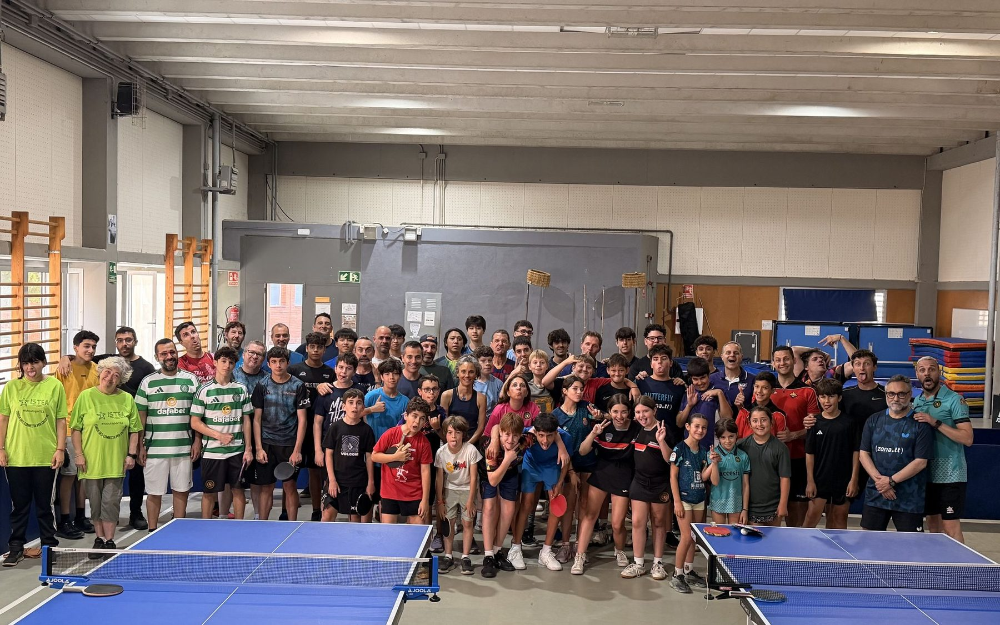
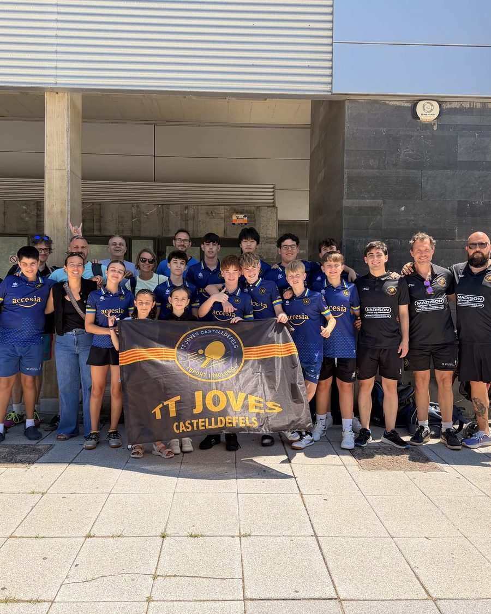
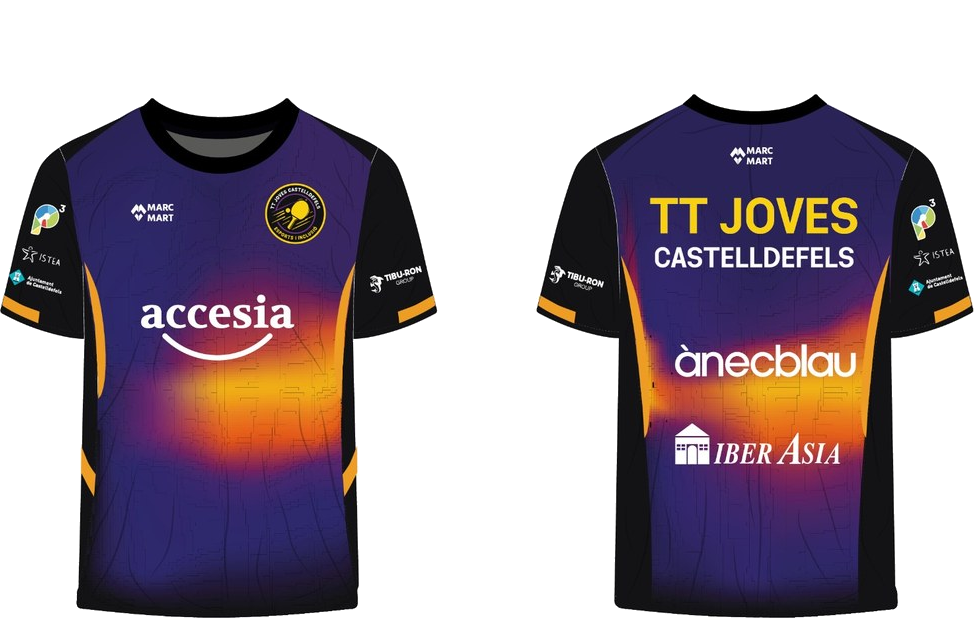
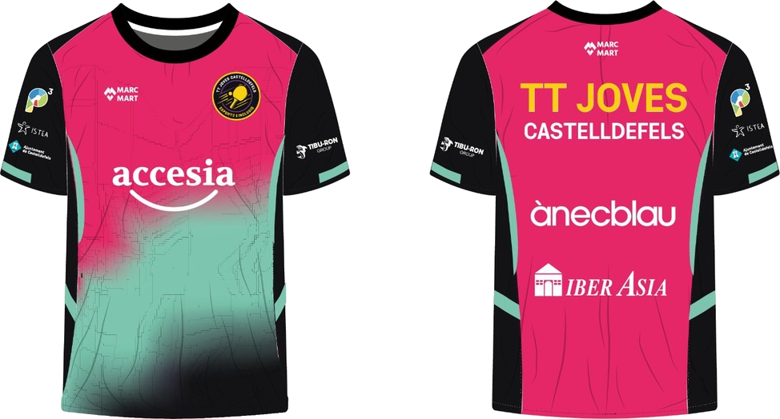
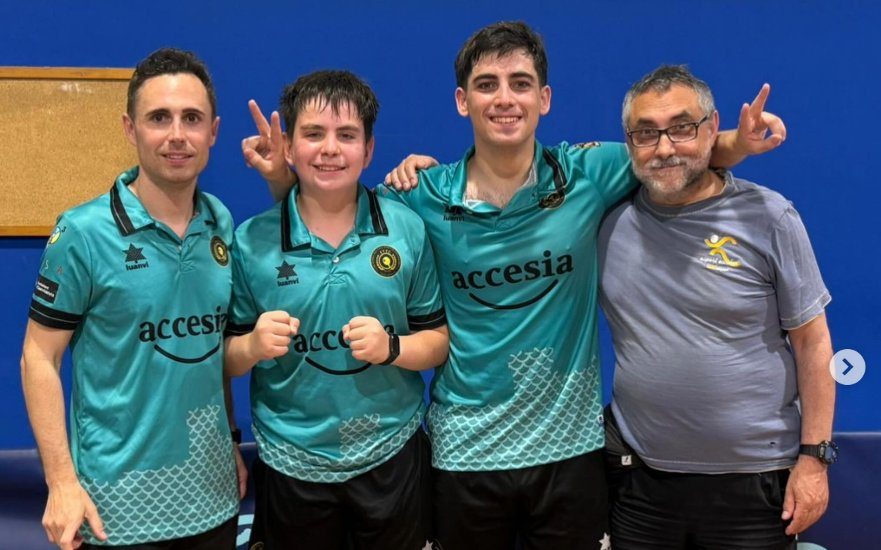
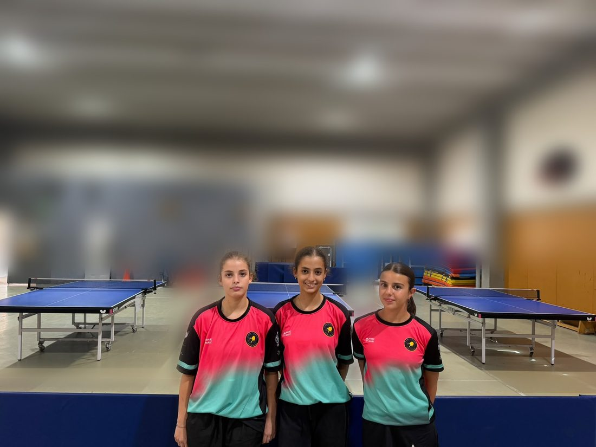
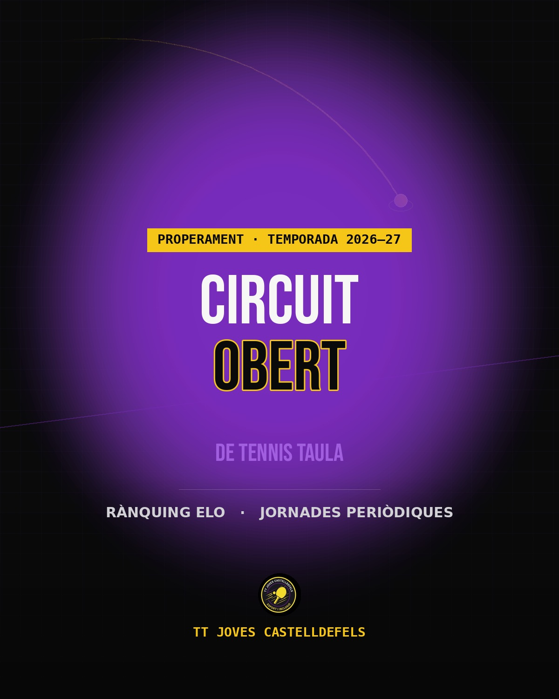

Escola per a totes les edats. Formació, competició i inclusió al cor del Baix Llobregat.
Escola de tennis taula a Castelldefels des de fa anys. Vine i prova.
Contacta'ns →El Club Tennis Taula Joves de Castelldefels és una entitat sense ànim de lucre que porta anys formant jugadors i jugadores de totes les edats al Baix Llobregat.
Operem a dues seus — Institut Josep Lluís Sert i Institut Les Marines — i donem servei a més de 100 famílies federades de 6 municipis diferents.

TT Joves Castelldefels · Temporada 2025–26Disseny oficial del club, amb el suport dels nostres patrocinadors.


Des dels primers cops de pilota fins a la competició federada. Una escala progressiva adaptada a cada moment.
Primer contacte amb el tenis de taula com a activitat extraescolar, centrat en el joc i la coordinació.
Base tècnica sòlida amb metodologia progressiva. Primers passos cap a la competició.
Antesala de la competició real. Treball tècnic i tàctic intensiu.
Jugadors de rendiment. Equip promocionat a 2ª Nacional.
Entrenament tècnic i joc en punts per a la categoria de jubilats.
Entrenament tècnic i ambient de club per a jugadors adults.
Grup exclusiu per a dones de tots els nivells. Un espai propi, sense pressió, on aprendre o millorar el joc.
El tenis de taula com a eina d'activitat física, benestar i cohesió social.
Sessions de tenis de taula adaptades per a persones amb Parkinson o en fase de recuperació d'un ictus. Treballem la coordinació, l'equilibri i l'estimulació cognitiva en un ambient tranquil i sense pressió.
Institut Les Marines · Dv 16:15–17:30
Sessions adaptades per a persones amb condicions del neurodesenvolupament, en col·laboració amb l'associació ISTEA. Un espai estructurat on gaudir de l'esport al seu propi ritme.
Institut Les Marines · Dv 17:30–18:30
El Club TT Joves Castelldefels participa en totes les competicions oficials de la Federació Catalana de Tennis Taula (FCTT). Aquesta temporada l'equip masculí ha aconseguit l'ascens a 2ª Nacional i el club estrena equip femení a 1ª Nacional.
La Lliga Interna del club, amb sistema de ranking ELO, arrenca a partir de setembre.
El dia a dia del club: ascensos, nous equips i novetats de temporada.

El primer equip masculí aconsegueix l'ascens a 2ª Nacional després d'una gran temporada de lliga.

Ens fa molta il·lusió presentar, per primer cop en la nostra curta història, un equip femení del club. Oumnia, Iman i Gala defensaran els nostres colors a 1ª Nacional, donant visibilitat a l'esport femení de Castelldefels.

Estem preparant un nou circuit obert amb ranking ELO i jornades periòdiques, obert a tots els nivells. Ben aviat podràs inscriure-t'hi.
Fes un cop d'ull →Empreses i entitats que fan possible el dia a dia del club.
El que més ens pregunten les famílies noves.
No, per a res. La majoria dels nostres grups comencen des de zero, sobretot Extraescolar i Iniciació. Els entrenadors adapten cada sessió al nivell de qui hi participa.
Roba esportiva còmoda i sabatilles netes de sola no marcadora. No cal pala pròpia per començar, el club en disposa per a les primeres sessions.
Omples el formulari de preinscripció online, et confirmem la plaça per correu i formalitzes la matrícula amb la documentació necessària. Tot el procés sol tardar uns dies.
Sí, oferim una primera sessió de prova gratuïta a tots els programes perquè puguis conèixer el grup i l'entrenador abans de decidir-te.
No cal cap informe mèdic previ per provar-ho. Si tens qualsevol dubte sobre si un programa s'ajusta a la teva situació, escriu-nos i ho parlem directament.
Per qualsevol dubte sobre programes, horaris o el club en general.
Omple el formulari i et contactem en menys de 48 hores.